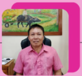
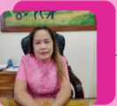
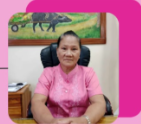
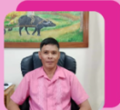
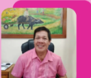

Barangay Quinagaringan Pequeno is a peaceful rural community in Passi City, within the province of Iloilo. It is known for its simple lifestyle, strong local governance, and active participation of residents in community programs.
Like many rural barangays in Passi City, Quinagaringan Pequeno was established as part of the gradual development of agricultural communities in the area. The name “Quinagaringan” is shared with a nearby larger barangay, with “Pequeno” indicating a smaller or subdivided portion of the original community.
Over time, the barangay has grown into a stable settlement where families have built long-standing homes and livelihoods, mostly centered on farming and small-scale economic activities. Its development has been shaped by strong community cooperation and consistent support from local government units.
In conclusion, Barangay Quinagaringan Pequeno stands as a quiet yet organized rural community within Passi City. Through strong leadership, active citizen participation, and a shared sense of responsibility, the barangay continues to maintain peace and gradually improve its development. Its simplicity, cooperation, and strong community values make it a good example of effective grassroots governance in the Philippines.
A progressive, peaceful, and self-sufficient barangay with empowered residents living in a sustainable environment, preserving our cultural heritage while embracing development.
To deliver basic services efficiently, promote participatory governance, protect the environment, and improve the quality of life of every Batu resident through transparent and accountable leadership.
Hon. Errol Panadero
Captain
Hon. Razel Lorque
Kagawad

Hon. Felomino Galudo
Kagawad

Hon. Shirley Zante
Kagawad
Hon. Eden Joy Palma
Kagawad

Hon. Rosadilla Balasa
Kagawad

Hon. Jovanni Nellasca
Kagawad

Hon. John Paguntalan
Kagawad